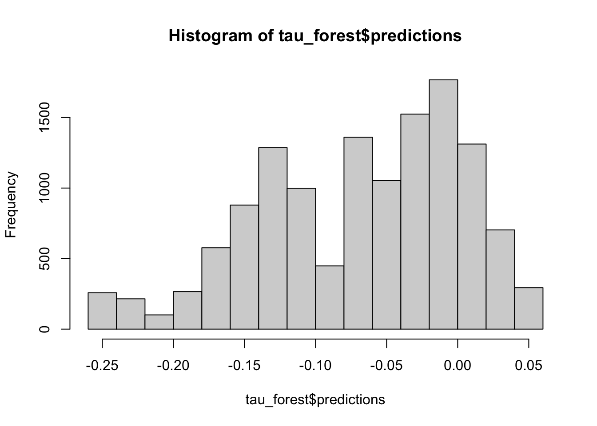
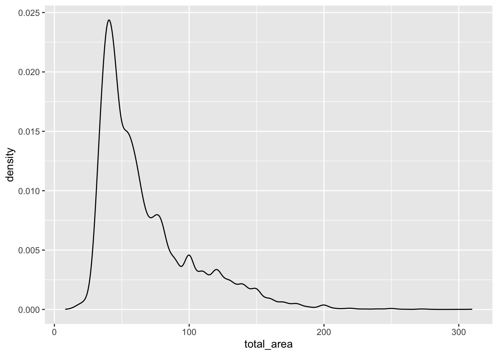

library(dplyr)
library(ggplot2)
library(stargazer)
library(grf)
data <- read.csv("table_cian_mos_ecm.csv")7 Гетерогенные эффекты
7.1 Теория
in progress…
7.2 Пример
Набор данных включает следующие переменные:
price– цена аренды квартиры в рублях;total_area– общая площадь квартиры в квадратных метрах;
discrim_proxy– наличие дискриминирующего текста в описании объявления;*_rajon– набор бинарных переменных, соотвествующих районам Москвы, где расположена квартира;first_floor– бинарная переменная, равная единице, если квартира расположена на первом этаже;*_rooms– набор бинарных переменных, соотвествующих количеству комнат в квартире;starii_fond– бинарная переменная, равная единице, если квартира принадлежит к старому жилому фонду;blochnii– бинарная переменная, равная единице, если квартира находится в блочном доме;derevjannii– бинарная переменная, равная единице, если квартира находится в деревянном доме;kirpichnii– бинарная переменная, равная единице, если квартира находится в кирпичном доме;monolitnii– бинарная переменная, равная единице, если квартира находится в монолитном доме;panelnii– бинарная переменная, равная единице, если квартира находится в кирпичном доме;stalinskii– бинарная переменная, равная единице, если квартира находится в сталинском доме;repair– бинарная переменная, равная единице, если в квартире сделан ремонт;four_and_over_rooms– бинарная переменная, равная единице, если в квартире четыре и более комнат.
7.2.1 Подготовка
Создадим логарифмы площади и цены:
data$log_total_area <- log(data$total_area)
data$log_price <- log(data$price)Произвольно разделим выборку на 2 части.
Как и раньше выберем нужные нам строчки, используя двоеточие для создания последовательности чисел. Первая половина датасета будет обучающей выборкой, вторая – тестовой:
data_train <- data[1:13000,] # обучающая выборка
data_test <- data[13001:26041,] # тестовая выборкаСинтаксис функции, которую мы будем далее использовать, предполагает, что мы должны передавать ей зависимую переменную, контрольные переменные и формулу модели отдельными объектами. Поэтому нам нужно их заранее заготовить.
formula <- log_price ~ log_total_area + Mos_center +
Akimanka_rajon + Hamovniki_rajon + Tverskoj_rajon + Taganskij_rajon +
Krasnoselskij_rajon + Mesanskij_rajon + Zamoskvorece_rajon +
Basmannyj_rajon + Arbat_rajon + first_floor + one_room + two_rooms +
three_rooms + four_and_over_rooms + starii_fond + blochnii +
derevjannii + kirpichnii + monolitnii + panelnii + stalinskii + repair
X <- model.matrix(data=data,formula)X матрица контрольных переменных, где первый столбец – константа.
head(X, 5) (Intercept) log_total_area Mos_center Akimanka_rajon Hamovniki_rajon
1 1 4.812184 0 0 0
2 1 3.427515 0 0 0
3 1 3.637586 0 0 0
4 1 5.075174 1 0 0
5 1 3.912023 0 0 0
Tverskoj_rajon Taganskij_rajon Krasnoselskij_rajon Mesanskij_rajon
1 0 0 0 0
2 0 0 0 0
3 0 0 0 0
4 1 0 0 0
5 0 0 0 0
Zamoskvorece_rajon Basmannyj_rajon Arbat_rajon first_floor one_room two_rooms
1 0 0 0 0 0 0
2 0 0 0 0 1 0
3 0 0 0 0 1 0
4 0 0 0 0 0 0
5 0 0 0 1 0 1
three_rooms four_and_over_rooms starii_fond blochnii derevjannii kirpichnii
1 1 0 0 0 0 0
2 0 0 0 0 0 0
3 0 0 0 0 0 0
4 1 0 0 0 0 0
5 0 0 0 1 0 0
monolitnii panelnii stalinskii repair
1 0 0 1 0
2 0 1 0 0
3 0 1 0 1
4 0 0 0 0
5 0 0 0 0Сохраним все нужные нам объекты отдельно:
X_mod <- X[1:13000,]
Y_mod <- data_train$log_price
T_mod <- data_train$discrim_proxy7.2.2 Причинный случайный лес
Используя заготовленную обучающую выборку строим лес, состоящий из 1000 деревьев:
B <- 10000
model <- causal_forest(X = X_mod,
Y = Y_mod,
W = T_mod,
num.trees = B)Считаем оценки на тестовой выборке:
X.test <- X[13001:26041,]
tau_forest <- predict(model,
X.test,
estimate.variance = TRUE )Посмотрим как распределены оценки:
hist(tau_forest$predictions)summary(tau_forest$predictions) Min. 1st Qu. Median Mean 3rd Qu. Max.
-0.330294 -0.120687 -0.061557 -0.071005 -0.007958 0.090587 Посчитаем для каждой оценки доверительный интервал:
low <- tau_forest$predictions - 1.96*sqrt(tau_forest$variance.estimates)
upper <- tau_forest$predictions + 1.96*sqrt(tau_forest$variance.estimates)
CI <- data.frame(estimation = tau_forest$predictions, low = low, upper = upper)
head(CI,5) estimation low upper
1 0.06194145 0.005284023 0.11859887
2 -0.02367664 -0.117214051 0.06986076
3 -0.15582478 -0.254837879 -0.05681168
4 -0.05883448 -0.140415310 0.02274634
5 0.02018377 -0.046290165 0.086657707.2.3 Важность факторов
Помимо того, что основным посылом для гетерогенных оценок было желание определить тритмент эффект для каждого наблюдения, имеющего уникальный набор характеристик, нам еще может быть интересно исследовать, какой вклад имеют эти характеристики в эффект:
variable_importance(model) [,1]
[1,] 0.000000e+00
[2,] 4.253223e-01
[3,] 8.881583e-04
[4,] 0.000000e+00
[5,] 0.000000e+00
[6,] 3.955426e-05
[7,] 0.000000e+00
[8,] 8.780927e-06
[9,] 0.000000e+00
[10,] 0.000000e+00
[11,] 0.000000e+00
[12,] 2.748574e-04
[13,] 1.702933e-02
[14,] 1.136934e-02
[15,] 1.827115e-02
[16,] 1.037088e-02
[17,] 6.833166e-04
[18,] 0.000000e+00
[19,] 1.404885e-02
[20,] 0.000000e+00
[21,] 1.956268e-02
[22,] 3.874035e-02
[23,] 8.259465e-02
[24,] 0.000000e+00
[25,] 3.607958e-01plot(variable_importance(model))
Из-за того, что подписаны не все точки, неудобно рассматривать факторы, перерисуем в ggplot. Идейно будет то же самое, но визуально приятнее.
# Для ggplot нужен отдельный набор данных, поэтому сохраним важность факторов и их номера в отдельный фрейм данных
importance <- data.frame(n = c(1:dim(variable_importance(model))[1]),
variable_importance = variable_importance(model))
ggplot(importance, aes(x = factor(n), y = variable_importance)) +
geom_point() # если навесить factor() у икса, то подпишутся сразу все точки, если нет, то будет как на прошлом графике
Посмотрим что же это за характеристики:
colnames(X)[2][1] "log_total_area"colnames(X)[22][1] "monolitnii"colnames(X)[23][1] "panelnii"colnames(X)[25][1] "repair"Площадь квартиры и ремонт в доме самые важные, меньше вклад типа дома (панельки и монолитные).
7.2.4 Гетерогенность эффекта по характеристикам
Попробуем понять для каких квартир эффект наибольший.
plot(tau_forest$predictions ~ data_test$total_area)
Эффект отрицательный для примерно 60-100 м2
# эффект больше, если был ремонт
ggplot(data_test) +
geom_boxplot(aes(factor(repair), tau_forest$predictions))
# эффект больше в центре
ggplot(data_test) +
geom_boxplot(aes(factor(Mos_center), tau_forest$predictions))# эффект меньше для панелек
ggplot(data_test)+geom_boxplot(aes(factor(panelnii),
tau_forest$predictions))# проверяем по комнатам:
data_test$room_number<- 1*data_test$one_room +
2*data_test$two_rooms +
3* data_test$three_rooms +
4*data_test$four_and_over_rooms
# эффект негативнее для 2-3 комнатных
ggplot(data_test) +
geom_boxplot(aes(factor(room_number), tau_forest$predictions))7.2.5 Heatmaps
Намного интереснее смотреть вклад сразу нескольких эффектов. Для этого есть тепловые карты. По осям располагаются характеристики, а интенсивность эффекта отражается цветом ячейки, расположенной на пересечении значений характеристик:
data_test$tau <- tau_forest$predictions
ggplot(data=data_test, aes(repair, Mos_center)) +
geom_tile(aes(fill=data_test$tau))
ggplot(data=data_test, aes(repair, room_number)) +
geom_tile(aes(fill=data_test$tau))ggplot(data=data_test, aes(Mos_center, room_number)) +
geom_tile(aes(fill=data_test$tau))hist(data_test$total_area)data_test$cut_area<-cut(data_test$total_area,
breaks=c(0,30,40,50,60,70,80,90,100,110,Inf))ggplot(data=data_test, aes(Mos_center, cut_area)) +
geom_tile(aes(fill=data_test$tau))ggplot(data=data_test, aes(room_number, cut_area)) +
geom_tile(aes(fill=data_test$tau))Итог: больше всего теряют хозяева больших двушек не в центре, до -25% арендной платы.